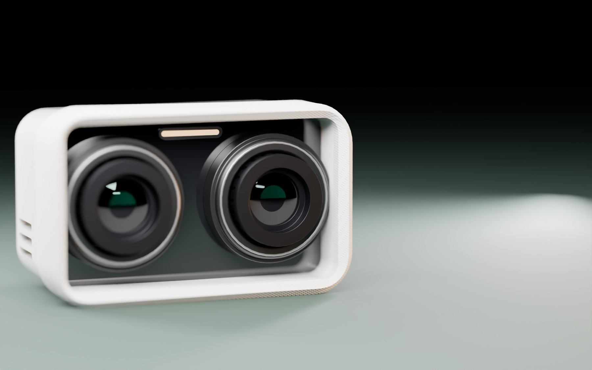
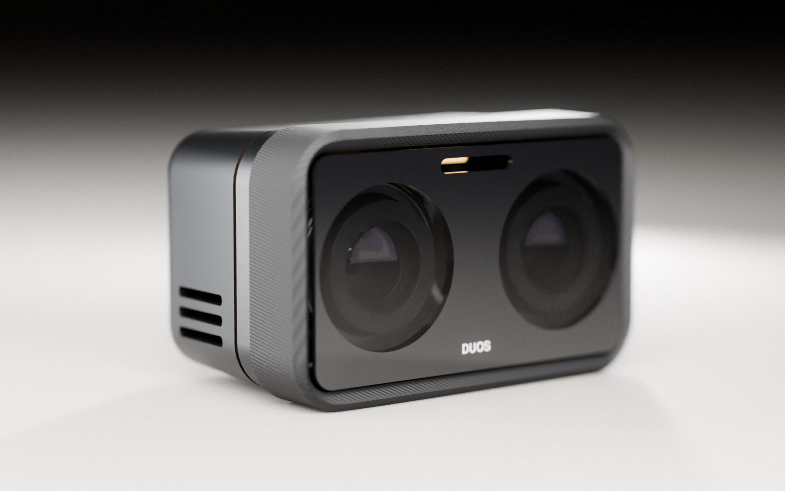

TEARDOWN
Four layers in 28 mm.
Scroll to take it apart.
Two global-shutter sensors, 26 mm apart, in a head that weighs 28 g. Close-range depth for canopy height, spray coverage and the gaps a pass left behind.
Scroll to take it apart.
Two low-profile M12 lenses on an aluminium plate that fixes the stereo baseline, behind the protective hood.
Both Mira220 sensors share one board, one clock and one trigger, so every pair is captured at the same instant.
A small bridge board sends both streams to the drone's computer. There is no onboard Jetson, which keeps the head at 28 g.
A carbon-nylon shell with a rubber hood. Four M2 holes at the back and a ¼"-20 thread underneath.
On the sprayer, Duos rides a two-axis yoke at the rear of the aircraft, facing aft at the spray boom. Rubber isolators under a quick-release plate take out motor buzz.
See what it finds on a real field.
See it in the field →The hood stands proud of both lenses, so a hard landing hits rubber, not glass.

